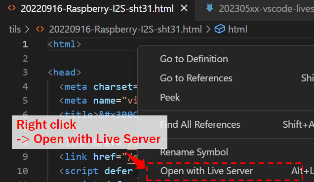
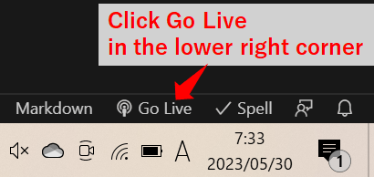
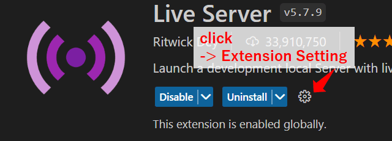

2023/05/02
Using the VSCode extension "Live Server"
When programming HTML/CSS/JavaScript in VSCode, it is convenient to install the 'Live Server' extension.
- With a single click, a local server can be launched and the page displayed.
- Images, CSS, etc. specified by relative paths can be reflected.
- Hot reloading is supported. When the original file is changed and saved, the changes are immediately reflected in the page being displayed.
- Host addresses, port numbers, default browsers, etc. can be configured.
- Pages can be accessed from other devices (e.g., cell phones) within the same network.
Live Server - Visual Studio Marketplace
Extension for Visual Studio Code - Launch a development local Server with live reload feature for static & dynamic pages
How to use
Open the folder containing the file you wish to view in VSCode.
Note: Live Server will not work unless you open it with a folder.
There are several ways to display the page.
- Open the file in VSCode, press ALT+L => ALT+O.
- Open the file in VSCode, right-click and select 'Open with Live Server'.
- Open the file in VSCode, click 'Go Live' in the status bar at the bottom right.


Setting
You can configure various settings in the configuration page on VSCode.
Detailed explanations for each setting are available on GitHub.
vscode-live-server/settings.md · ritwickdey/vscode-live-server
Launch a development local Server with live reload feature for static & dynamic pages.
There are a total of 20 items.
You can configure settings such as host address, port number, and default browser.